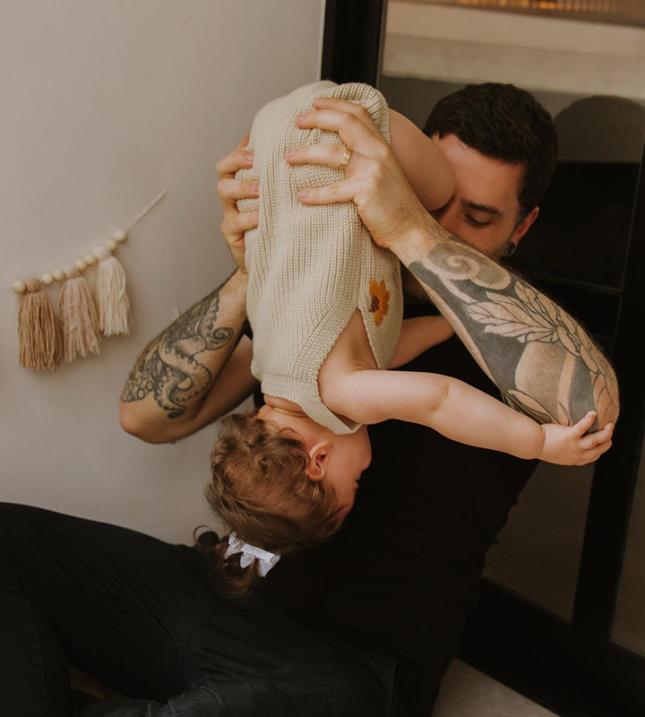
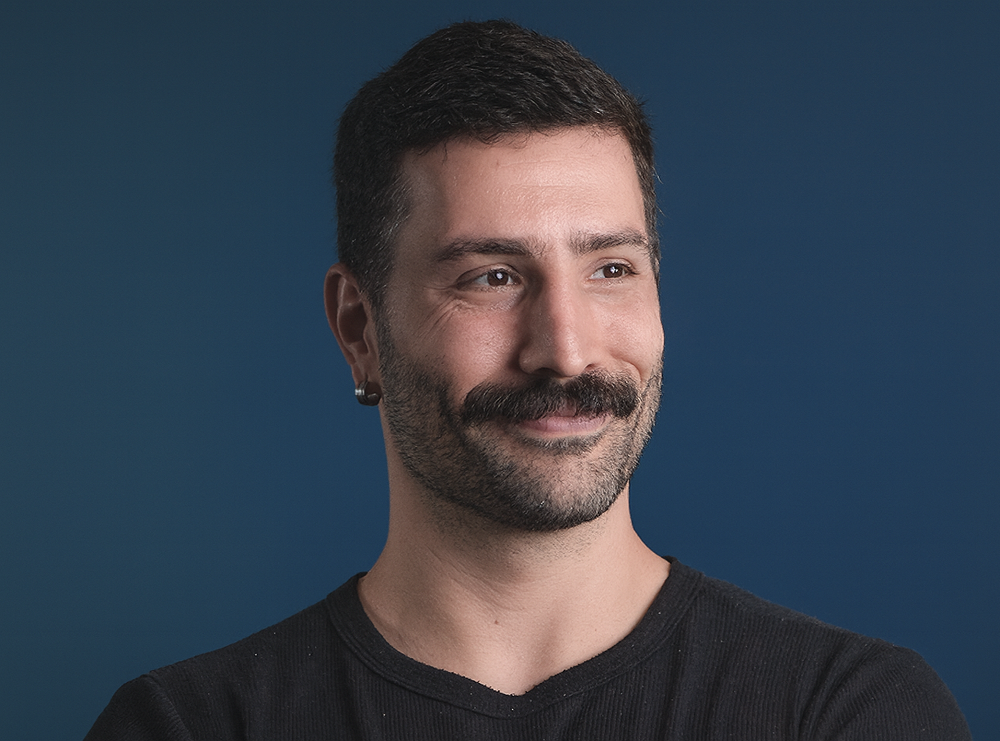
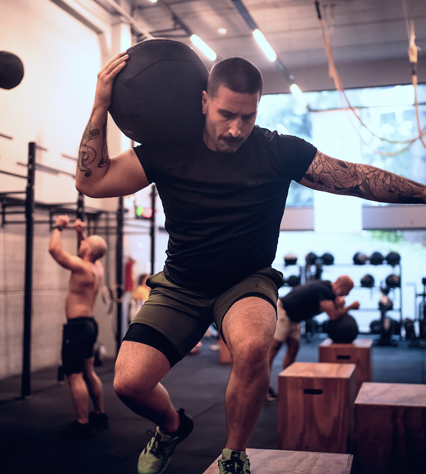
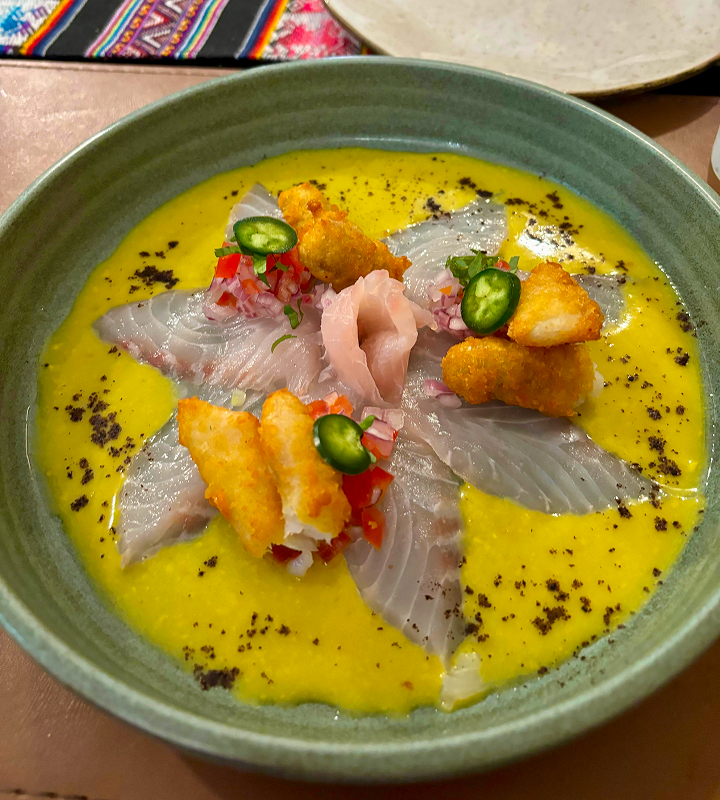
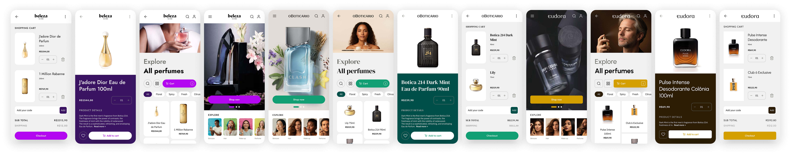
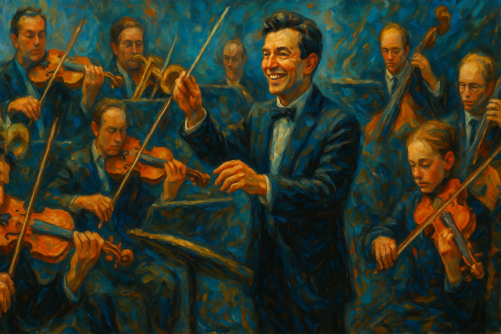
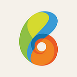
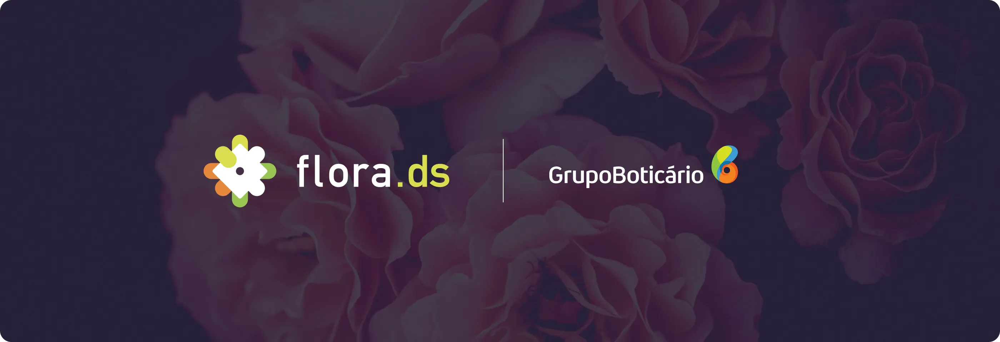

Pai & MaridoMeu melhor eu


STAFF PRODUCT DESIGNER |
TECHNICAL LEADERSHIP | DESIGN STRATEGY |
DESIGN OPS | DESIGN SYSTEMS



TRAJETÓRIA
Staff Product Designer com mais de 15 anos de experiência na construção de produtos digitais escaláveis, design systems robustos e frameworks orientados a impacto. Minha trajetória combina atuação como Individual Contributor sênior e liderança formal, sendo minha experiência mais recente em gestão. Ao longo dessa jornada, identifiquei que meu maior impacto ocorre como IC, especialmente no craft, na geração de conceitos, na fluência em métricas, na experimentação estruturada e na proximidade com usuários, transformando evidências em decisões estratégicas e valor tangível para o negócio.
A vivência em gestão ampliou minha visão sistêmica, capacidade de priorização em contextos complexos e influência organizacional, além de fortalecer minha atuação como mentor de designers em diferentes níveis de maturidade. Especializado em Design de Interação, Design Systems e Product Design orientado a métricas, liderei a idealização e a escala do Flora no Grupo Boticário, hoje presente em mais de 100 squads, impulsionando ganhos de eficiência, evolução de maturidade e melhorias mensuráveis na experiência de usuários finais e internos.
FLORA DESIGN LANGUAGE

SAMPLES
PUBLICAÇÕES
Métricas bem compostas orquestram times com harmonia. Neste artigo eu proponho um modelo prático para alinhar produto, negócio e tecnologia.

Metrics can work like a score: when composed well, teams play in tune. The article details how to make decisions with stronger signal.

PT
Uma visão prática sobre evolução de design systems com governança, qualidade e integração real com engenharia.